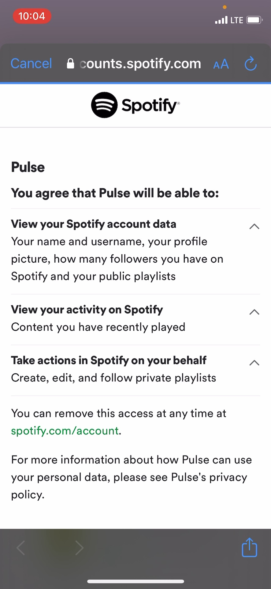
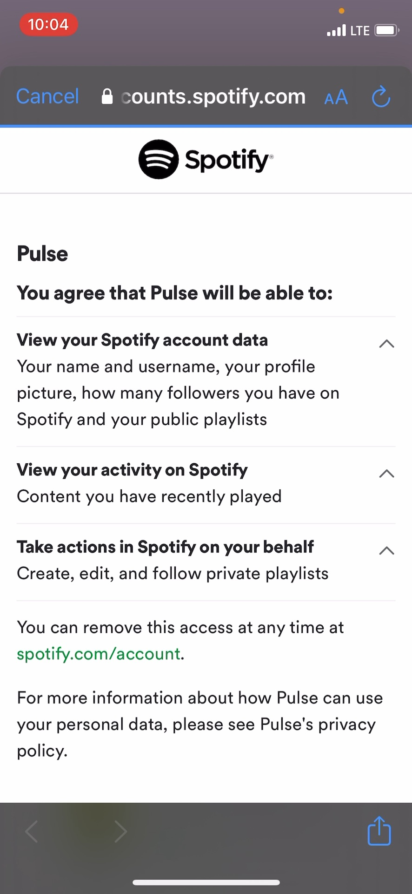

Bubblegum Bandit out on Steam!
Download it for free here.
Thanks for stopping by! Here you can find some things I've made lately.
Bubblegum Bandit
An action platformer about flipping gravity and spitting gum! You play as the Bubblegum Bandit, a space rogue seeking to destroy a robot regime. You use your bubblegum and gravity powers in unison to infiltrate spaceships, steal their power sources, and get out before everything blows up.
We made this game using LibGDX, an open-source Java framework that gave us a deeper understanding of game architecture. I contributed heavily to the overall game concept and level design. I also programmed a lot of different pieces, including level editor integration, a scriptable scrolling camera, gameplay elements like blocks and doors, enemy attacks, gum mechanics, player controls, and integrating 2D lighting.
WebGL Infinite World
For Cornell's Intro to Graphics class, our final project was to create anything we wanted using rasterization using a TypeScript framework built on Three.js. My group of three created this procedurally generated world. You explore from a first-person perspective using WASD and the mouse. As you move in any direction, terrain far away is unloaded and new terrain appears in front of you, creating the perception of an infinite world. I developed the player control, infinite terrain using chunks, and atmospheric haze shader. I also tuned the terrain generation, which is done with simplex noise.
OpenGL App


I made this to learn how to use OpenGL and SDL, improve my C++, and teach myself some graphics knowledge before I took the graphics class at Cornell. It uses Perlin noise to generate a small world of cubes that can be explored from a first-person perspective with WASD and mouse controls.
Pulse
 

I worked with 5 people to make this iOS app. The idea is to provide insights on user listening habits for a specific community, like a college campus, to help with music discovery. It pulls from each user's listening history on Spotify, then generates a playlist out of everyone's most played songs. I focused on front-end development in Swift, working on connecting to the Spotify API and handling account authentication, sending user data to a Heroku app via a REST API, and turning the data into playlists.